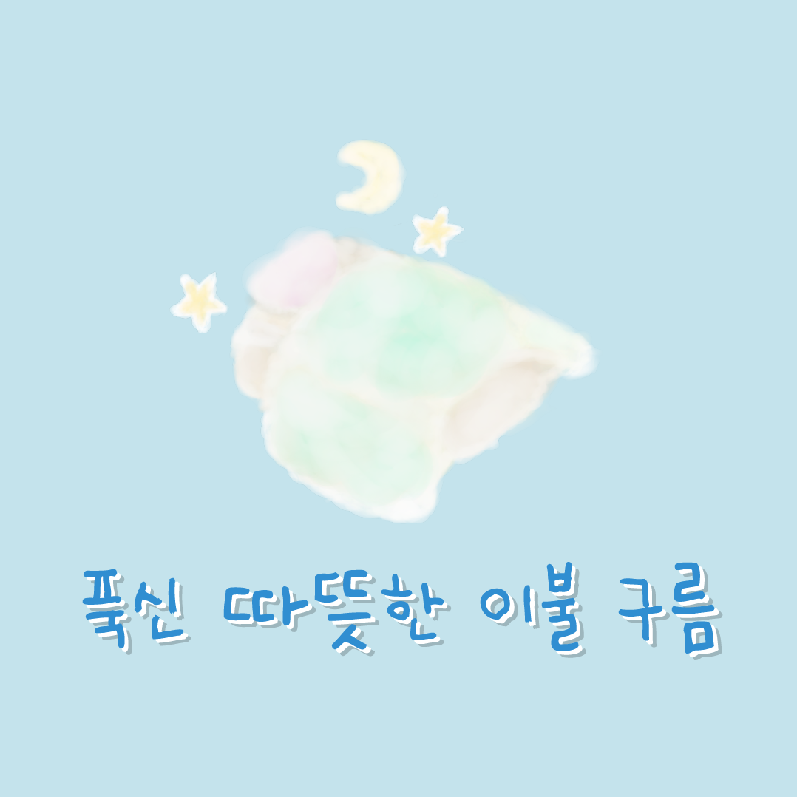

쿨~쿨~ 포근한 이불 구름을 받으셨네요!
요즘 하는 일에 집중하고 싶지는 않으셨나요?
혹시 계속 딴 생각이 들고 쉬고 싶었다면
하던 일을 잠시 내려놓아 보세요.
따뜻한 이불을 덮고 푹 자고 일어나면
더 쉽게 일을 해낼 수 있을 거예요!
숙면을 취하고 일어나
더 활기차게 일을 마무리 해 보면 어떨까요?
요즘 하는 일에 집중하고 싶지는 않으셨나요?
혹시 계속 딴 생각이 들고 쉬고 싶었다면
하던 일을 잠시 내려놓아 보세요.
따뜻한 이불을 덮고 푹 자고 일어나면
더 쉽게 일을 해낼 수 있을 거예요!
숙면을 취하고 일어나
더 활기차게 일을 마무리 해 보면 어떨까요?
대리만족을 원한다면?
아래의 영상으로!
아래의 영상으로!